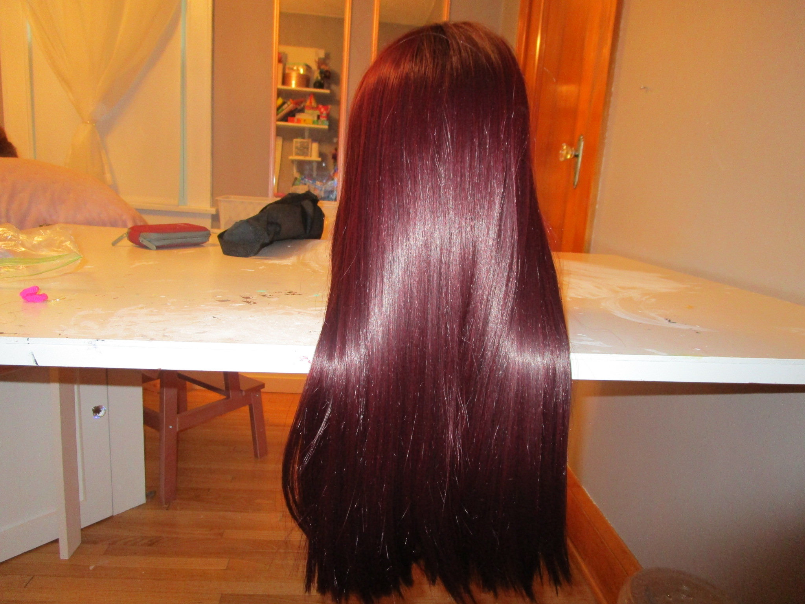
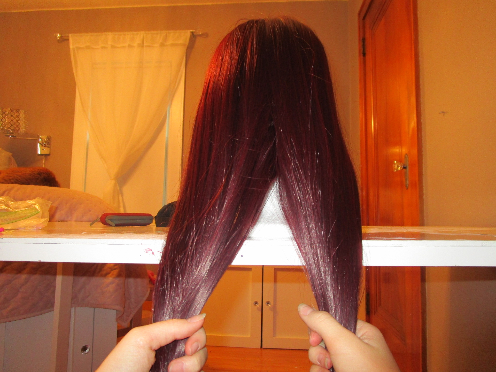
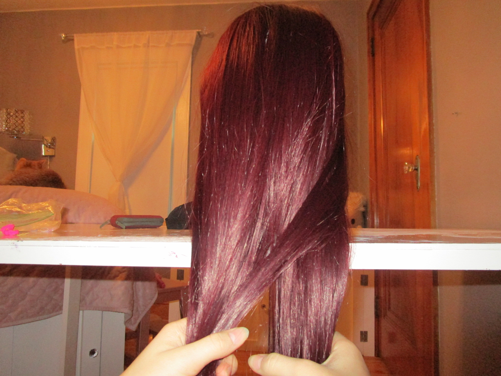
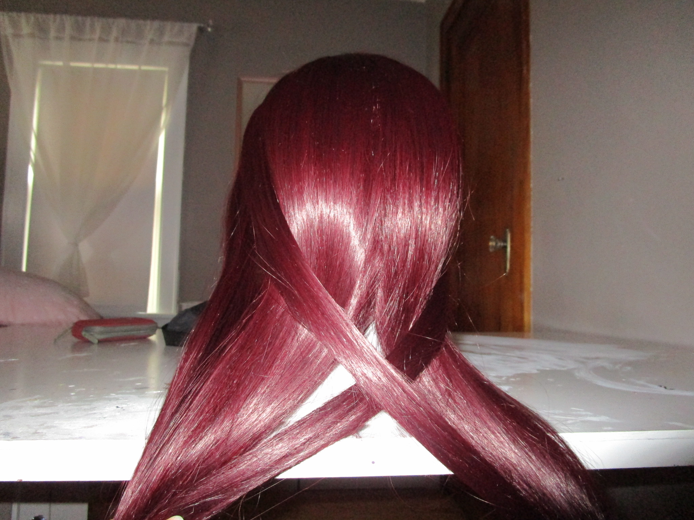
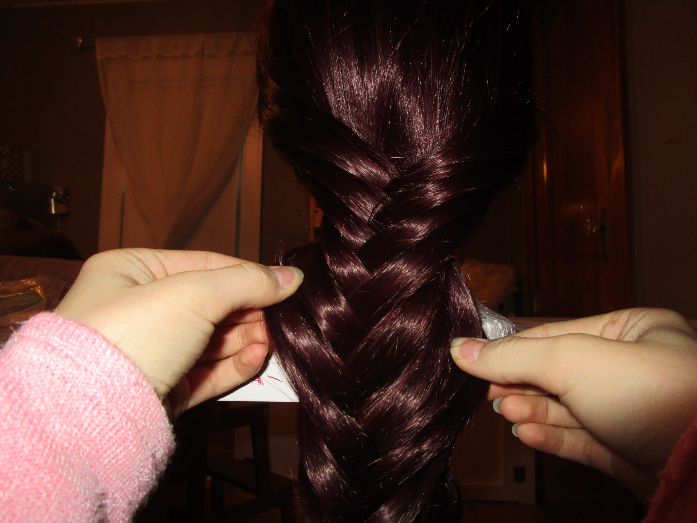

fishtail braiding is a tricky thing, and you can learn how to do it here!
*remember, pracrice makes perfect, so if you don't get it the first time, keep trying and don't give up!*
Brush hair until there are no tangles.
Split hair into 2 even sections
Take a small section of hair from the right section and cross over to the left section
Repeat step 3 with the left section
Repeat steps 3&4 until the whole head of hair is braided.
Tie with elastic(you can also add a colorful hairbinder to make it extra beautiful)
Pull the sides of the braid to give more volume, but dont let the hair get out from the elastic
and that's it!